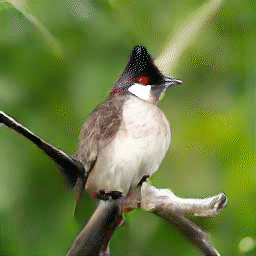
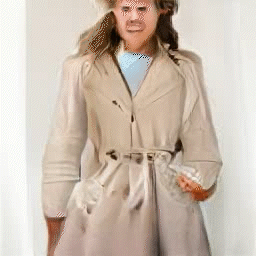
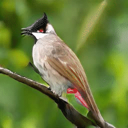
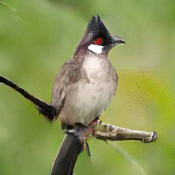
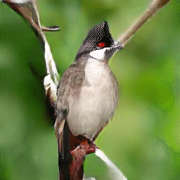
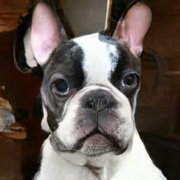

Transferability of directions
Our visual analysis shows that the directions learned from the one ImageNet class are applicable to a variety of ImageNet classes
Zoom


Rotate


Contrast

Sitting

